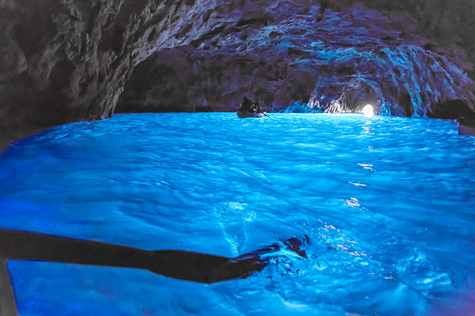
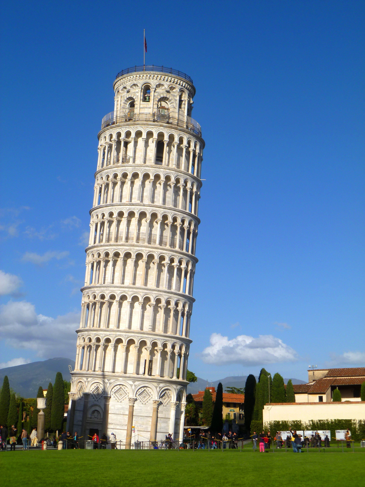
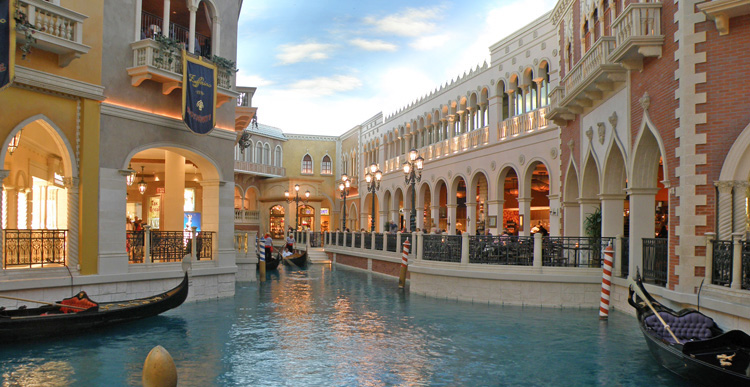
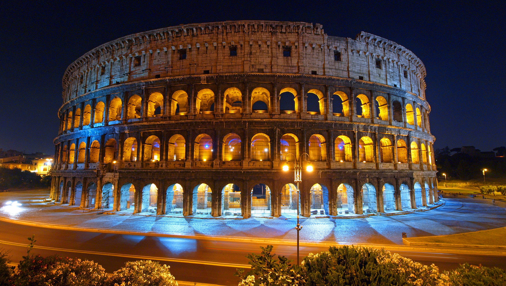

Italy
Blue Grotto
|
The Blue Grotto is a number of sea caverns on the south coast of Malta, east of the fishermen's harbour Wied iz-zurrieq.
Wied iz-zurrieq is in the village of Qrendi and the blue grotto cave located within the Qrendi village.
It is located right across from the small uninhabited islet of Filfla. |
 |
Leaning Tower of Pisa
|
The Leaning Tower of Pisa or simply the Tower of Pisa is the campanile, or freestanding bell tower, of the cathedral of the Italian city of Pisa,
known worldwide for its unintended tilt.
It is situated behind the Cathedral and is the third oldest structure in Pisa's Cathedral Square
after the Cathedral and the Baptistery. |
 |
The Grand Canal
|
The Grand Canal, is a canal in Venice, Italy. It forms one of the major water-traffic corridors in the city.
Public transport is provided by water buses and private water taxis, and many tourists explore the canal by gondola. |
 |
The Colosseum
|
The Colosseum or Coliseum, also known as the Flavian Amphitheatre, is an oval amphitheatre in the centre of the city of Rome, Italy.
Built of concrete and sand,it is the largest amphitheatre ever built.
The Colosseum is situated just east of the Roman Forum. |
 |